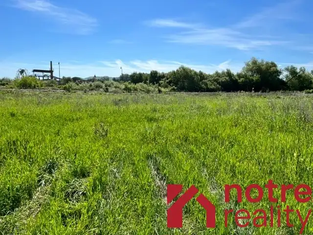
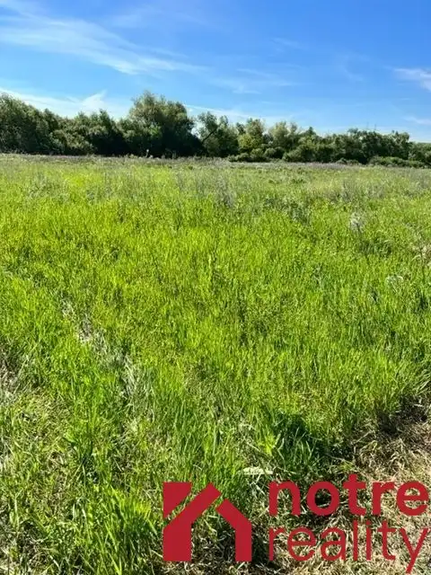

Predaj · Pozemok
Stavebný pozemok v blízkosti kúpaliska v Rapovciach
Rapovce
13 600 €54 € za m²


- Plocha252 m²
- Vlastníctvoosobné
O nehnuteľnosti
Ponúkam na predaj stavebný pozemok o výmere 252 m2 nachádzajúci sa v Rapovciach . Pozemok je rovinatý, inžinierske siete ako elektrina a voda sa nachádzajú v blízkosti pozemku. Príjazdová cesta je zatiaľ len spevnená, uvažuje sa s realizáciou asfaltovej cesty. Pozemok je vhodný na výstavbu rekreačného domu, prípadne na výstavbu rodinného domu. Nachádza sa v blízkosti areálu kúpaliska a wellnesu, je to výborná lokalita v ktorej vznikne nová štvrť domov.
Parametre
- Rozloha pozemku
- 252 m²
- Poschodie
- neuvedené
- Vlastníctvo
- osobné
- Status
- aktívne
- Terén
- rovina
- Prístupová cesta
- neupravená cesta
- Dátum zverejnenia
- 2022-06-02
Kde to je
Ďalšie ponuky
Celá ponuka